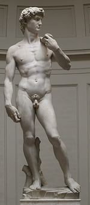

Michelangelo
Click on the images to enlarge
1 
2 
3 
4 
5 
7 
8 
9 
10 
11 
12 
13 
14 
15 
16 
17 
18 
19 
20 
22 
23 
24 
25 
26 
Michelangelo Buonarroti, known as Michelangelo
(Caprese 1475 – Rome 1564)

Introduction
One of the great artistic geniuses of humanity, he summarized and accomplished in their plenitude all the high Renaissance quests for the absolute and for beauty, in a less serene way than Raphael, but with a dynamism and sense of drama that opened up new perspectives.
Michelangelo Buonarroti was born into a ruined family claiming aristocratic lineage that had just moved to Florence. The young lad’s dispositions led to his being entrusted to the studio of Ghirlandaio, the most renowned fresco-painter of the time. Lorenzo de’ Medici, the Magnificent, noticed the apprentice, and gave him the run of his palace gardens, his Academy, thereby giving him access to his collection of antiquities; there Michelangelo frequented a circle of refined intellectuals — Poliziano, Marsilio Ficino, Pico della Mirandola — who had a profound influence on his spiritual development and his ambition as a creative artist. The Academy was run by the sculptor Bertoldo di Giovanni (c.1420–1491), a specialist in bronze. Now Michelangelo was first and foremost a sculptor in marble; so it seems as if it the study of antiquities must been the primary influence in his training. In those days, hardly a day went by without excavations unearthing some important piece from the Italian soil: for example, in the early 16th century, the famous group of the Laocoon. From classical sculpture, Michelangelo sought a knowledge of composition, of the grouping of figures, of the harmonious beauty of the human body, of the expressive interplay of musculature, but added to this a quest for movement and a psychological and moral deepening. The human body became a language through which the artist evinced Man’s emotions and passions, then, raising himself up onto the metaphysical plane, expressed all the tragedy of human destiny in the face of his creator.
Much has been discussed about the Neoplatonist interpretation and significance of Michelangelo’s work, going as far as seeking to explain the tiniest details of it through this philosophy, undoubtedly in a somewhat excessive fashion. Certainly, Michelangelo as an artist was aware of his own importance and of the message value of his work. It’s certain that he remained all his life a profound believer, even though, like many men of the Renaissance, he was tempted by syncretistic dream. He experienced Antiquity intensely through its rediscovered works and through its spirit, and he was not afraid to mix pagan elements into his Christian world. Let’s not forget, too, that he was living in particularly troubled times: this Florentine saw successive political régimes come and go at a frantic pace in his beloved city, saw the Throne of St Peter occupied by some scandalous (Alexander VI Borgia), spineless or greedy pontiffs, saw faith wavering in many people, and orthodoxy rejected along with the principle of authority. He has sometimes been accused of going as far as the limits of heresy, and Michelangelo certainly did keep some dubious company. Despite the conflicts of which his works bear the stigmata, he did not compromise. The unstable events significantly disrupted his projects and his career; his difficult character, his easily-offended pride, his mood swings, taking him from exaltation to discouragement and despair, had an effect on the accomplishment of his work, which was to a large extent unfinished, like some sort of grandiose failure, especially in the field of sculpture. Now Michelangelo felt and saw himself first and foremost as a sculptor. He regarded sculpture as the most noble of all the arts — partly because it was the most difficult. Faced with a block of marble from which he had to extract a living form, he knew the pathetic struggle of the creator who is never satisfied. Through this feeling of failure, he often did not take his work all the way to completion, to the polishing that gives the marble its sparkle and its precious appearance, leaving the chisel and gradine marks visible in certain places, in a rough mattness, sometimes barely roughing out the desired shape. A certain romanticism has seized upon this non finito as expressing the master’s most secret torments, loading it with supreme significance, though the truth is really much simpler: Out of boredom or through rage at not being able to achieve what he wanted Michelangelo simply refused to go on any further. He always treated those works he regarded as finished with a highly scrupulous sense of finish. But this bruttezza caused some ravages in later times, and through this repugnance with seeing things through right to the end, increasingly frequent with age, Michelangelo has become the symbol of the ceaseless struggle of human genius against blind fatality, a sort of new Sisyphus.
Beginnings and early masterpieces
It is at the beginning of his career, when he was still at the “Academy”, that we have to place a still confused bas-relief, the Battle of the Centaurs and the Lapiths (1) (Florence, Casa Buonarroti), and in counterpoint — paganism-Christianity — the Madonna of the Steps (2) (Florence, Casa Buonarroti) full of serenity, where he acknowledges his debt to his great predecessor Donatello in the technique of the relief. So right from the start, Michelangelo wavers between a dynamic, dramatic tendency and an antithetical tendency, and inclines towards softness and a certain smoothness, in which echoes of Leonardo de Vinci can be made out. Another juvenile work has been found, a wooden crucifix commissioned by the Prior of Santo Spirito in Florence, though some people continue to debate its authenticity; this would be the only sculpture to which the artist added colour, a process which he rejected from then on, preferring the glossy or matt naivety of the marble. On the death of Lorenzo the Magnificent in 1492, Michelangelo left the Medici palace, visiting Venice and Bologna in 1494; he applied himself to anatomical studies of corpses. Returning to Florence in 1495, he carved for a cardinal a Sleeping Cupid, now lost, but which, because of its perfection, was taken for an antiquity. The cardinal engaged the young sculptor to make the journey to Rome, and the oppressive atmosphere in Florence only added to his need to escape. So it seems to have been at this time that Michelangelo turned towards a comfortable career as a sculptor, in a quite open register, but where the subjects were dictated by the mythology that was so much in vogue. However, in Bologna, he had been engaged to collaborate on finishing off the ‘arca’ of San Domenico, and these little statuettes of a kneeling angel, of St Petronius and St Procul reveal the influence of a master from the early quattrocento, Iacopo della Quercia, from whom Michelangelo takes the puffy folds and contained passion. It was at the request of a French cardinal that Michelangelo executed in Rome his first great masterpiece, one of his most popular works, the Pietà in St Peter’s (3), disfigured in an attack in 1972. The theme and the composition are unusual, of Nordic rather than Italian origin, but the artist brings forth from the marble an exquisite, very moving poem. The Virgin Mary’s pure face (curiously, depicted very young — the same age as the tortured Christ) bends gracefully over the abandoned but not broken body of a Christ, as beautiful in death as an Adonis, its harmonious anatomy set off by the admirable draping of the great cloak removed by the suffering mother as if to make of it a shroud. This juvenile masterpiece, in which the sculptor’s virtuosity and quivering sensitivity burst forth, is also the only sculpture that he proudly signed, on the diagonal strap across the Virgin Mary’s breast. At around the same time as he was carving this pious image, Michelangelo was working on the most pagan of his figures, an extraordinary Drunken Bacchus (4) (Florence, Bargello Museum), a staggering young ephebe mocked by an ironic satyr behind his back. From this point on, in the ardour of his works, the intensity of the life in them, the artist had already gone beyond his models from antiquity.
Though the statuettes for the Picolomini altar in Sienna cathedral are disputed, the theory has been posited that the Madonna in the Church of Our Lady in Bruges (5) might have originally been intended for this group and that it was executed circa 1500. The fine oval of the face here takes on a sulky expression. This same theme of the Madonna and Child inspired the sculptor to produce two charming works , in the form of the tondo, a composition of circular form still fashionable in Italy, in which he explores (hardly ever to revisit it) the possibilities of bas-relief, the Pitti tondo (6) (Bargello) and the Taddei tondo (7) (London, Royal Academy), from the names of the families who commissioned them. In this same period, Michelangelo remembered that he had learnt to paint, and in the same circular form produced the Doni tondo (8) (Florence, Uffizi), depicting a Holy Family with a curious foreshortening effect for the squatting Madonna, and in the background, some naked fauns whose presence in this religious scene might be explained in an allegorical fashion (paganism giving way to Christianity?). In this earliest known painted work, Michelangelo shows an astonishing sense of modelling and an original research in the tonalities. However, the next masterpiece was to be another sculpture. Returning to Florence, to where some secret nostalgia would bring him relentlessly back, Michelangelo extracts from a block of marble, originally intended for a statue for the cathedral, but judged too slender and abandoned, a gigantic David (9) (1501–1504; the statue is over 4 m [13'] tall), heroically naked, carrying his sling nonchalantly over his shoulder — an image blossoming with victorious youth where the artist has brilliantly overcome the block’s lack of thickness. David won the honour of being erected before the Palazzo Vecchio (now in the Accademia). Buonarroti’s fame now made him the most prominent artist in Florence. In 1503, the ‘Signoria’ commissioned from him a great fresco to decorate the Council Hall: Michelangelo painted the Battle of Cascina, now lost, employing agitated groups. At the same time, he was given the prestigious task of carving twelve larger-than-life apostles for the cathedral. Of this great project, only St Matthew (10) remains, poorly separated from its gangue (Florence, Accademia).
In 1505, the fiery Pope Julius II (Giuliano Della Rovere) called Michelangelo to Rome and gave him the task of making his tomb. This was the start of a long and painful undertaking that, like the Medici Chapel in Florence, would hound and obsess the artist throughout his life, without his ever finding a solution worthy of the original intention. The pontiff’s tomb was imagined in the church of St Peter, currently at the height of building, and even in a place of honour beneath the planned dome. But from this point on, Michelangelo drew down upon himself the opinionated hatred of the great architect Bramante. This antagonism hounded him for a long time and did nothing to help his projects. Julius II himself changed his mind, commissioning from the reluctant Buonarroti instead a colossal statue of himself in bronze, intended to decorate the façade of San Petronio in Bologna, to symbolize the Pope’s subjection of this city. This work in bronze, exceptional in the artist’s output, suffered the fate of political manifestos: as soon as rebellion came along, it was pulled down and melted down.
The Sistine ceiling
In 1508, Julius II had a new idea. He gave the artist, whose genius he had guessed, the task of decorating the ceiling of the Sistine Chapel. Michelangelo also got to complete this project by painting frescoes in the lunettes of the windows and in the spandrels. On the walls, earlier frescoes already evoked scenes from the Gospel and the life of Moses. Buonarroti’s project comprised the history of Mankind from the Creation up to Moses, i.e. symbolically the world before the Fall, then the anxious wait for Redemption. On the ceiling itself, the frescoes comprise nine great rectangular pictures depicting the Creation, original sin, and the story of Noah (11). The scenes of the Creation are rightly the most famous, in particular those of the creation of Man and of Woman, where the artist uses a reduced number of figures to give these pictures dramatic intensity and epic grandeur, but also an incomparable depth of emotion. One cannot forget the gaze, at once hesitant and bedazzled, of the first man, nor his Creator’s gesture, so august and so delicate, barely brushing his finger to breathe life into him (12). It’s obvious that Michelangelo has broken with traditional images to really create a personal cosmogony, in which he expresses all the might of his faith and all the passion of his temperament. He also creates a canon that is all his own. Bodies with over-developed muscles, inhuman and sometimes almost monstrous — but then what he is evoking through these searing, disproportionate forms is after all a history above normal humanity. Along the cornice of the Biblical scenes sit naked adolescents in various attitudes, with attentive gazes: these are the ignudi (13), original creations of Michelangelo, into which he has put all his ardent researches into the beauty of the human body, intermediaries between Heaven and Earth without scriptural justification, archetypes of our passions and our faculties. These mysterious, ideal beings in search of an identification with the divine undoubtedly relate to the Neoplatonist theories with which Michelangelo was steeped. Lower down, between the lunettes and framed by the false pilasters supported by cherubs handled as Atlases, twelve seated figures evoke alternately prophets and sibyls. Here again, the curse of humanity is mitigated by the announcement of the atonement, but the gravity, the severity of the figures barely lets the glimmer of hope filter through this dense wall of anguish and torment. There is hardly ever the slightest grace, even in the female figures; the enormous sibyl of Cumæ (14), for example, her arms knotty like some fairground wrestler, inspires rather a terrible repulsion. In the pendentives in the four corners are episodes from the Old Testament (David and Goliath, Judith and Holofernes, etc.) relating to some miraculous salvations of Israel, the chosen people. In the spherical triangles above the windows, rather curled-up figures are supposed to belong to pagan families fallen outside of the Revelation; and lastly, in the lunettes, seated either side of the windows, appear the ancestors of Christ (15): one further step towards Redemption.
From Julius II’s tomb to the Medici Chapel
The immense labour of the Sistine ceiling took up all Michelangelo’s time and energy until 1512. The following year Julius II died and was replaced by a Medici, Leo X, who did not like Michelangelo, suspected of being a republican. The artist went back to work on the dead pontiff’s tomb. At the outset, it had been intended as a free-standing edifice, of pyramidal shape, with, on the lower level, statues of captives and victories symbolizing the struggles of life, as well as the liberal arts. In the middle, seated powerfully, Moses and St Paul, i.e. the Old and the New Law, and at the summit, the recumbent Pope, supported by angels bearing him off to eternal glory. The new contract of 1513 with the heirs modified the scheme, simplifying it, reducing the number of figures and setting the monument with its back against the wall. To this second version belong the two Slaves (16) in the Louvre Museum, who struggle in their bonds with an air of suffering that is not just physical. These two sculptures are of a rarely-equalled expressive power. The artist also started the terrible Moses, with enormous musculature and a fascinating, furious look, imbued with imperious, superhuman strength. Fresh changes in 1516 led to a reduction in the size of the captives: these are only roughed-out statues, but already so bewitching.
Julius II’s tomb was heading towards disaster. However, in 1517, Michelangelo launched with enthusiasm into a new commission: the façade of the Medici church of San Lorenzo in Florence (17), a grandiose project of both architecture and sculpture, but this too foundered. Around 1520, Leo X entrusted him with the building and decoration of the sepulchral chapel grafted onto the same church to house two monuments in memory of Giuliano de’ Medici (18), Duke of Nemours, and Lorenzo (19), Duke of Urbino, both great defenders of the pontifical throne. The artist goes beyond the programme of glorifying the Medici, giving it a more grandiose and general significance, in which can be recognized once again the Neoplatonist ideas he had absorbed in his youth and his tendency to always rise up to the great problems of humanity. In its structure, the architecture recalls the sacristies of the quattrocento. In particular, we find in it the decision to highlight using darker stone, the pietra serena, the architectonic lines, but a new power and dynamism can be felt here too. The sepulchral monuments occupy two of the sides of the rectangle and adopt the same pyramidal scheme: in two rectangular niches sit the statues of the princes being commemorated, in reality idealized, heroized portraits, both wearing the armour of a Roman captain: Giuliano, juvenile, energetic, represents Action, the face in full daylight. Lorenzo’s gaze, on the other hand, is plunged into the shadow cast by the helmet; Lorenzo meditates, the hand supporting the lower part of the figure, worried, mysterious, symbolizing Thought that turns man inward upon himself. At the feet of each of them is a sarcophagus whose lid consists of two scrolls, on the sloping tops of which lie four naked figures in most uncomfortable poses, the limbs as if torn apart or crossed in awkward positions, the faces ravaged by moroseness and suffering — expressing the torments of the human soul during the course of life. These figures are allegories for the four times of day, or, if one prefers, of passing time: Day, Night, Dawn, Twilight, alternately male and female figures, some of them still exhibiting ‘unfinished’ surfaces. True, it was not Michelangelo who installed the monuments, and once again this ambitious programme went through vicissitudes and mutilations. In particular, Michelangelo was planning on figures of Rivers, on the lower level, lying down in the antique manner, which were not even roughed out (one clay model is preserved in the Accademia in Florence), and also frescoes in the upper lunettes. On a third side of the chapel stands the Medici Madonna, trying to restrain the boisterousness of the Infant Jesus seated on her knees. No longer with the suaveness of the Madonnas in the Vatican and in Bruges, there is a sort of vehemence in her sadness, reflected in her more jerky construction, her more ragged drapery, and a sort of savagery in the face.
But then came troubled, violent times. A popular power was established in Florence; in 1527 came the sack of Rome, and the humanist civilisation of the Renaissance seemed to be crumbling under the blow of the new Barbarians. The artist felt these events deeply, adding to the internal dramas and multiple hindrances to which his work was prey. In 1530, Florence surrendered to Pope Clement VII. Soon, Michelangelo no longer felt at home in Florence, which he abandoned almost for good in 1534 (having scarcely finished the Medici tombs) to go to Rome. There, Julius II’s monument (20) had become a nightmare for him, and in 1532, tired of fighting, the artist resigned himself to a fairly pitiful arrangement: mediocre pupils finished off the monument and installed it in the little San Pietro in Vincoli church, a setting for which it was quite out of proportion. Michelangelo worked only partially on two new statues for the final monument: Rachel, symbolizing the contemplative life, and Lia, active life, both marked by a tendency to classicism, towards which the aging artist was moving. Gone were the slaves, and the Victory group, originally intended for this great ensemble, remained in the studio (now in the Palazzo Vecchio in Florence); its scholarly “en flamme” construction was to inspire all Mannerist sculpture. Lastly, the proportions of Moses are irreparably distorted by its position at ground level, which does not suit it at all.
The ‘Last Judgement’, the works in architecture
The artist’s gloomy mood and growing pessimism are betrayed in the great fresco of the Last Judgement, accomplished from 1536 to 1541 at the request of Paul Farnese III to cover the end wall of the Sistine Chapel. The tonalities are darker than in the frescoes on the ceiling; Christ the Judge, who takes on the appearance of a sort of slightly thickset Apollo, is anything but reassuring, and the greater part of Creation seems doomed to an accursed fate. In the final analysis, the composition, quite muddled, suffers from its proximity to the mature masterpiece. As in his Pietàs, here Michelangelo once again takes up and expands upon a mediæval theme, with additional nods to Dante and Antiquity (Charon’s ferry). The tormented souls in Hell reveal a variety and an invention that are as morbid as the Romanesque tympana of the 12th century. The chosen need the help of the angels and saints to haul themselves painfully up into Paradise. This great ensemble did more than all the rest to establish Michelangelo’s reputation for “terribilità”. On the other hand, we do know that in the following century, the heroic nudity of the Resurrection was found shocking and had to be covered up with trousers for the sake of decency!
The artist’s long old age did not however completely sink into bitterness; Michelangelo remained active right till the end and participated in the artistic life of his times, advising, recommending this or that of his disciples, a feared patriarch already overrun by his own myth. He made friends in the Roman circle that gathered around the poetess Vittoria Colonna (1492–1547), recapturing something of the atmosphere of the great debates of ideas of bygone days in the gardens of the Academy. For a long time, he himself had been writing poems that, like his letters, tell us a lot about his thinking, particularly in relation to the Platonist concepts. The bust of Brutus (21) (Florence, Bargello), an ideal effigy of tyrannicide that he carved in this period, bears a reflection of these Roman friendships. Michelangelo undertook two great new frescoes for the Pauline Chapel (Vatican), the Conversion of St Paul (22), thrown from his horse, and the Martyrdom of Peter (23), but here again, the hands of his pupils play a major part in their execution.
Problems and projects in architecture were taking up more and more of his time. In this field, his two greatest successes are the vestibule and staircase in the Laurentian Library in Florence, started in 1523, but only finished after 1560 by Bartolomeo Ammannati (1511–1592), following his plans. In Rome, his designs too were followed for the conversion of Diocletian’s Baths into a church (Santa Maria degli Angeli, 1561–1566) and the top storey of the Farnese Palace, with its vigorous cornice. From 1538, the Capitole square was redeveloped under his direction; it is lined with three palaces, decorated with powerful pilasters lending rhythm and movement to the façades, etched with deep shadows. This dynamic structure launched architecture on paths leading to the Baroque, by creating scenic effects involving elements of sculpture: here, in the centre of the square, stands Marcus Aurelius on horseback, and at the entrance, the Dioscuri, all classical sculptures. Lastly, contributing in no small way to his glory, Michelangelo provided the design for the famous dome of St Peter’s. Officially architect of the basilica in 1546, he didn’t manage to see it finished however, thwarted by the machinations of some friends of his predecessor, Antonio da Sangallo the Younger. Later, the outer shell was rebuilt to a different profile. It is nonetheless true that St Peter’s enormous and imposing crossing still bears the mark of his genius, and that Bernini, another genius, somehow instinctively managed to find a profound harmony with great predecessor, whom he worshipped.
The sculptor’s message
But Michelangelo never forgot the passion of his life, his true vocation — sculpture. Right till the end, he pursued his epic battle with marble. The idea of death haunted him, and this meditation, so much in accordance with his Christian faith, reinforced by age, led him back once again to the image of the Pietà that had given him his first masterpiece: to be precise, it was a Deposition from the Cross (24) that he started around 1550, intending it initially for his own tomb (Florence ‘duomo’). Once again, the forms are utterly original. Christ’s dislocated, zigzagging body, the two women either side barely managing to hold it as it falls, and the ghostlike figure (a self-portrait has be seen in this) of Nicodemus or, according to certain commentators, Joseph of Arimathea standing behind, like a God the Father in certain Germanic Trinities, makes no reference to any Italian scheme of the time; it seems he once again had to turn to the Nordic world to find an echo of this haunting, expressionistic mysticism. The last attempt, once again a man distorted with pain against a standing Madonna Pietà Rondanini (25), Milan, Castello Sforzesco, is pitiful and very moving. The artist, who had already taken an angry hammer to the Duomo Pietà, removing one of Christ’s legs and breaking the arms, in despair of obtaining the desired form reduced his final work to a sort of phantom of repenting, haunting failure, and nothingness, with a derisory limb seemingly hanging in space, like some kind of invalid’s ex voto.
In our opinion, it certainly isn’t this last image of powerlessness — so appreciated by our contemporaries — that should be remembered, but the masterpieces of youth and maturity, that overturned and shook up the art of the time by their tension, their fever, their indomitable energy. From this tormented art, but with brilliantly inventive forms, must have issued the mannerist movement, born in Florence under the patronage of the master, and soon to propagate itself throughout Europe. It was indeed Michelangelo who was the inventor of the “linea serpentina”, one of the key lines of mannerism. Several of his works are worthy of the epithet mannerist, like the Victory, of Hercules and Cacus (Florence, Casa Buonarroti) and the Christ de Santa Maria sopra Minerva (26) in Rome, as handsome as a classical hero (1519–1521). Lastly, out of the Michelangelo pathetics the Baroque would also later be born, whose masters would acknowledge Buonarroti as one of their spiritual fathers.
Michelangelo died in Rome at the age of nearly ninety, laden with glory, already entered into legend, but he was buried in his true homeland of Florence, where he lies still.

© 2006 Umanista.Net